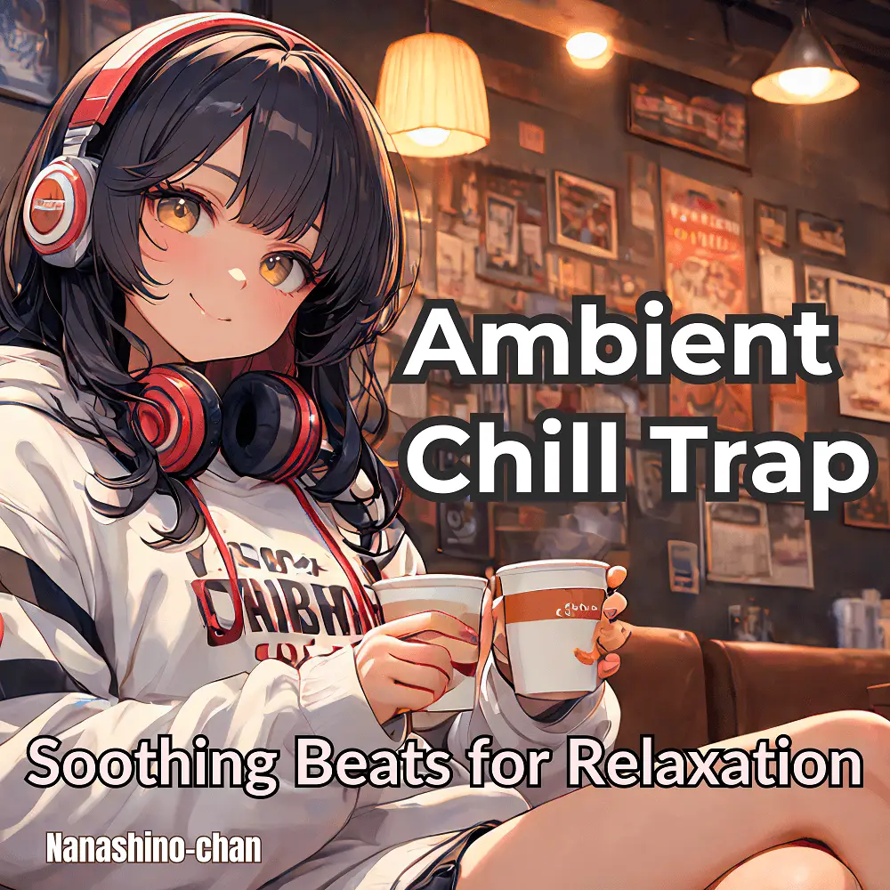

Ambient · Chill Trap · Instrumental
Ambient Chill Trap: Soothing Beats for Relaxation
Nanashino-chan
Nanashino-chanの「Ambient Chill Trap: Soothing Beats for Relaxation」。Ambient / Chill Trap / Instrumentalを楽しめる全18曲のインストゥルメンタル作品です。「Midnight Waves / Echoing Skies」などを収録。気になる曲を試聴して、配信サービスでお気に入りを見つけてください。
2025-02-12 リリース · 18 曲 · Instrumental
アルバムを試聴
気になる音楽を、ここから。
曲を選ぶまでジャケットを表示します。試聴にはYouTubeを使用します。
YOUTUBE PREVIEW
試聴する曲を選んでください
曲を選ぶまでジャケットを表示します。試聴にはYouTubeを使用します。
再生できない場合は、配信サービスでアルバムや曲を開いてください。
配信サービスでアルバムを探す
「検索」のリンクは検索結果を開きます。サービス内でアルバムや曲を選択してください。
収録曲一覧 18
- 01Midnight Waves
- 02Echoing Skies
- 03Tranquil Bassline
- 04Soft Breeze
- 05Nocturnal Rhythm
- 06Dreamy Flow
- 07Floating in Time
- 08Mellow Horizon
- 09Calm Frequencies
- 10Serene Echoes
- 11Gentle Pulse
- 12Lush Atmosphere
- 13Subtle Waves
- 14Nightfall Vibes.
- 15Clouded Dreams
- 16Restful Beats
- 17Evening Glow
- 18Horizon Drift
SNSで使いたい音源を探す
「Nanashino-chan ＋ 曲名」をコピーして、SNSアプリの音源検索に貼り付けてください。音源の表示は地域やアカウントにより異なります。コピー機能は利用許諾を付与するものではありません。